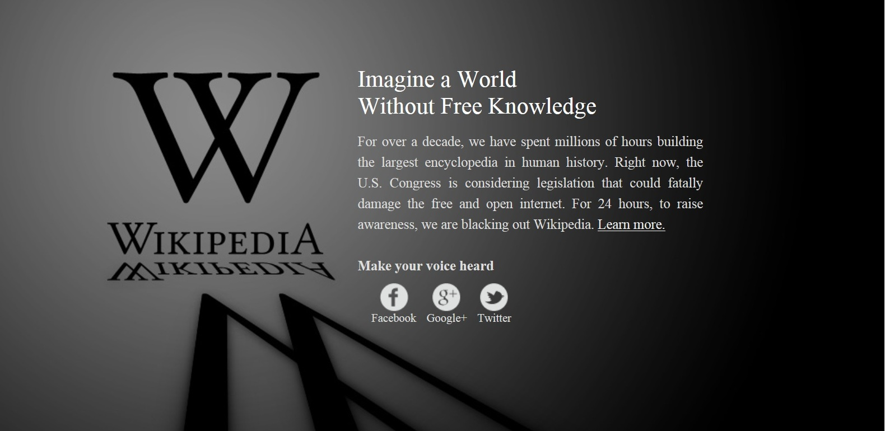
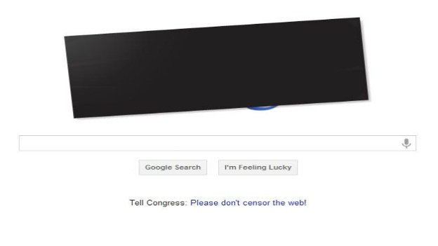
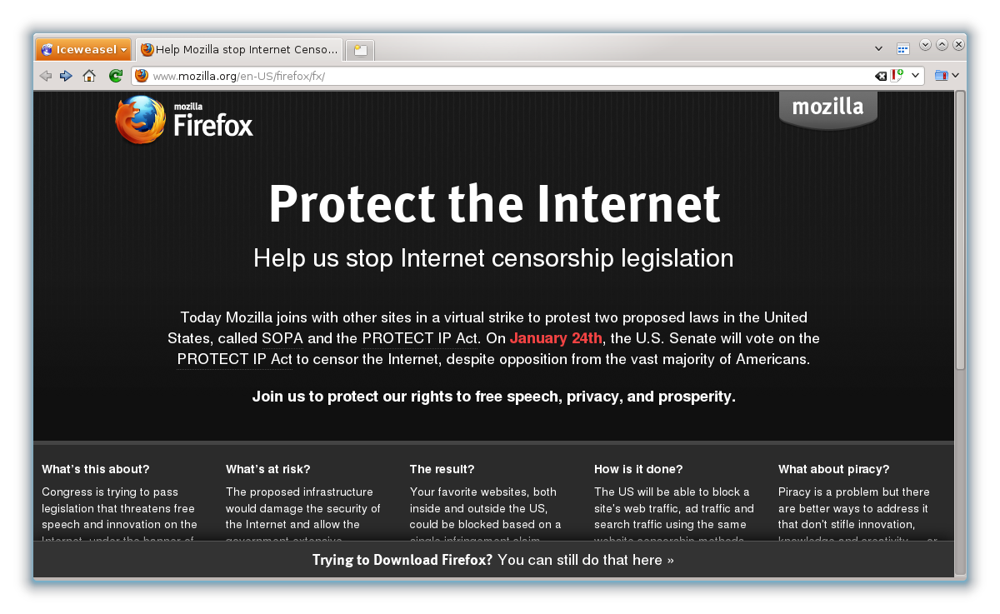

Mozilla và vai trò với Open Web
Nguyễn Hà Dương (
@cmpitg
, cmpitg [at] gmailDOTcom)
Mozilla và vai trò với Open Web
Liên kết
Bài trình chiếu:
https://github.com/CMPITG/mozilla-and-open-web/
hoặc
http://goo.gl/MbVGi
Tham gia với Mozilla:
http://goo.gl/rWmz9
Nguyễn Hà Dương,
reference-error.org
Mozilla Representative
Fedora Ambassador
Twitter:
@cmpitg
Thành viên
Không gian cộng đồng,
HanoiLUG,
Ubuntu-VN,
Coding Dojo Hà Nội.
Giới thiệu
Mozilla là gì?
Open Web là gì?
Mozilla đã làm những gì để hỗ trợ Open Web?
Nguồn ảnh: Wikipedia
Mozilla
là gì?
Mozilla là gì?
Lich sử Mozilla:
1998:
Mã nguồn Netscape browser suite dưới dạng tri-license, Mozilla ra đời.
"Netscape's source code as Netscape's product"
Mozilla là gì?
2002:
Mozilla 1.0
90% người dùng Internet dùng IE
Phiên bản đầu tiên của Firefox tên gốc và Phoenix
Mozilla là gì?
2003:
Mozilla Foundation ra đời
Openness
Innovation
Opportunity
2004:
Firefox 1.0 phát hành
Không chỉ là Firefox
Open Web
là gì?
Non-open Web?
Các công ty phát triển và cố gắng biến công ty riêng thành chuẩn chung:
ActiveX (IE)
(Macromedia) Adobe Flash®
Microsoft Silverlight®
Các vấn đề phát sinh:
Công nghệ đóng
Vấn đề với các ứng dụng đa nền tảng: Flash trên iThings, ...
Chi phí
SOPA
và PIPA
Chống SOPA và PIPA

Chống SOPA và PIPA

Chống SOPA và PIPA

Open Web là gì?
What is open web and why is it important?
http://goo.gl/s68J7
Open Web là gì?
Nội dung và ứng dụng tuân theo chuẩn mở
Mã nguồn sản phẩn của mã nguồn tuân theo chuẩn mở
Cách thức truy cập và sử dụng mở
Không
phải là ý tưởng mới
Open Web là gì?
Tính chất của Open Web
Trong suốt
Sửa đổi theo ý muốn
Cải tiến
Đóng góp ngược
Sáng tạo
Vai trò của Mozilla với Open Web
Vai trò của Mozilla?
Sứ mệnh (Mozilla Mission)
Openness
Innovation
Opportunity
Tuyên ngôn Mozilla (Manifesto)
http://www.mozilla.org/about/manifesto.en.html
Mozilla làm những gì?
Firefox
Là một nền tảng
Vấn đề riêng tư và bảo mật được đặt lên hàng đầu
Fun và hackable
Open Web Apps
Social APIs
Ánh sáng, Camera, Tương tác!
http://mozillapopcorn.org
Mozilla làm những gì?
Đi đầu trong thử nghiệm và chuẩn hóa công nghệ open web
WebGL
WebRTC
Persona (Browser ID)
JavaScript: Rhino và SpiderMonkey
Powered by Firefox OS
Photo by Alesa Dam
Thông tin thêm
Follow
@Boot2Gecko
và
@mozhacks
trên Twitter
Platform mailing list
:
http://groups.google.com/group/mozilla.dev.platform
Kênh IRC
: irc.mozilla.org kênh #B2G
B2G Repo
:
https://github.com/mozilla-b2g/B2G
B2G Architecture
:
https://wiki.mozilla.org/B2G/Architecture
Gaia Repo
:
https://github.com/mozilla-b2g/gaia
Developer Docs
:
https://developer.mozilla.org/en/Mozilla/Boot_to_Gecko
Web API Docs
:
https://wiki.mozilla.org/WebAPI
Xin chân thành cảm ơn!
Tham gia với Mozilla:
http://goo.gl/rWmz9
Bài trình chiếu:
https://github.com/CMPITG/mozilla-and-open-web/
hoặc
http://goo.gl/MbVGi


{kind=link}